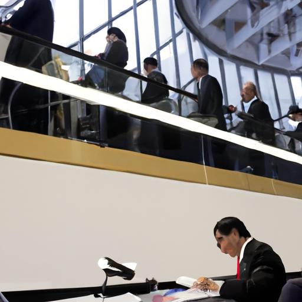

日本政府、国民に「週一贅沢デー」導入を提案、経済活性化を目指す

日本政府、国民に「週一贅沢デー」導入を提案、経済活性化を目指す
日本政府は、国内経済の活性化を図るため、新たな取り組みとして「週一贅沢デー」を導入することを提案した。この制度は、国民が週に一度、普段よりも高価な商品やサービスを購入することを奨励するもので、消費を促進し、景気回復を狙う狙いがあるという。
具体的には、金曜日を「贅沢デー」と定め、全国の商店やレストランが特別な割引や限定商品を提供することが予定されている。政府は、この取り組みを通じて消費者の購買意欲を高め、特に中小企業の売り上げを底上げすることを期待している。
一方で、専門家の中には、国民の負担増や過度な消費を招く可能性があるとして懸念を示す声もある。しかし、政府は「楽しみながら経済を応援する新しいライフスタイルを提供したい」と積極的にアピールしている。